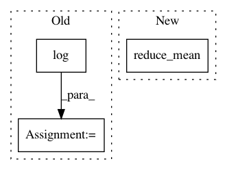

fe9ebeefe7593432d1df9cb2c8b7ffdc8ec1a38b,tensorlayer/cost.py,,cross_entropy,#Any#Any#,12
Before Change
with tf.name_scope("cross_entropy_loss"):
net_output_tf = output
target_tf = target
cross_entropy = tf.add(tf.mul(tf.log(net_output_tf, name=None),target_tf),
tf.mul(tf.log(1 - net_output_tf), (1 - target_tf)))
return -1 * tf.reduce_mean(tf.reduce_sum(cross_entropy, 1), name="cross_entropy_mean")
def mean_squared_error(output, target):
Return the cost function of Mean-squre-error of two distributions.
After Change
// cross_entropy = tf.add(tf.mul(tf.log(net_output_tf, name=None),target_tf),
// tf.mul(tf.log(1 - net_output_tf), (1 - target_tf)))
// return -1 * tf.reduce_mean(tf.reduce_sum(cross_entropy, 1), name="cross_entropy_mean")
return tf.reduce_mean(tf.nn.sparse_softmax_cross_entropy_with_logits(output, target))
def mean_squared_error(output, target):
Return the cost function of Mean-squre-error of two distributions.
In pattern: SUPERPATTERN
Frequency: 3
Non-data size: 3
Instances
Project Name: tensorlayer/tensorlayer
Commit Name: fe9ebeefe7593432d1df9cb2c8b7ffdc8ec1a38b
Time: 2016-08-23
Author: dhsig552@163.com
File Name: tensorlayer/cost.py
Class Name:
Method Name: cross_entropy
Project Name: brilee/MuGo
Commit Name: 754238ee0338c960ed6f3640f3ef6dd3b3fb7108
Time: 2017-06-23
Author: brian.kihoon.lee@gmail.com
File Name: policy.py
Class Name: PolicyNetwork
Method Name: set_up_network
Project Name: MorvanZhou/tutorials
Commit Name: 780dcd9fd372afa8524a6515eec6a4c90b1494c9
Time: 2017-03-09
Author: morvanzhou@gmail.com
File Name: Reinforcement_learning_TUT/8_Actor_Critic_Advantage/AC_CartPole.py
Class Name: Actor
Method Name: __init__